Exportieren von Fumiguide-Daten und Erstellen von Begasungsberichten
Mit dem Fumiguide-Programm kann der Anwender Daten als
Textdatei exportieren, die zu einem späteren Zeitpunkt mit Hilfe einer Bericht-Vorlage in MS-Word geöffnet werden kann. Zur Erstellung eines Begasungsberichts klicken Sie zunächst bei geöffneter ProFume Fumiguide-Datei in der oberen Menüleiste auf “Datei”, anschließend auf “Exportieren”.
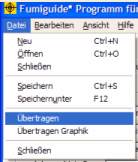
Das folgende Dialogfenster wird
angezeigt, in das Sie einen Dateinamen für die zu exportierende Datei eingeben müssen. Es empfiehlt sich, der Textdatei (*.txt) den gleichen Namen zu geben wie der ProFume Fumiguide-Datei (*.fum). Im folgenden Beispiel nannte der Begasungsleiter die Textdatei "Mustermühle.txt" Nach der Eingabe eines Dateinamens klicken Sie auf „Speichern“.
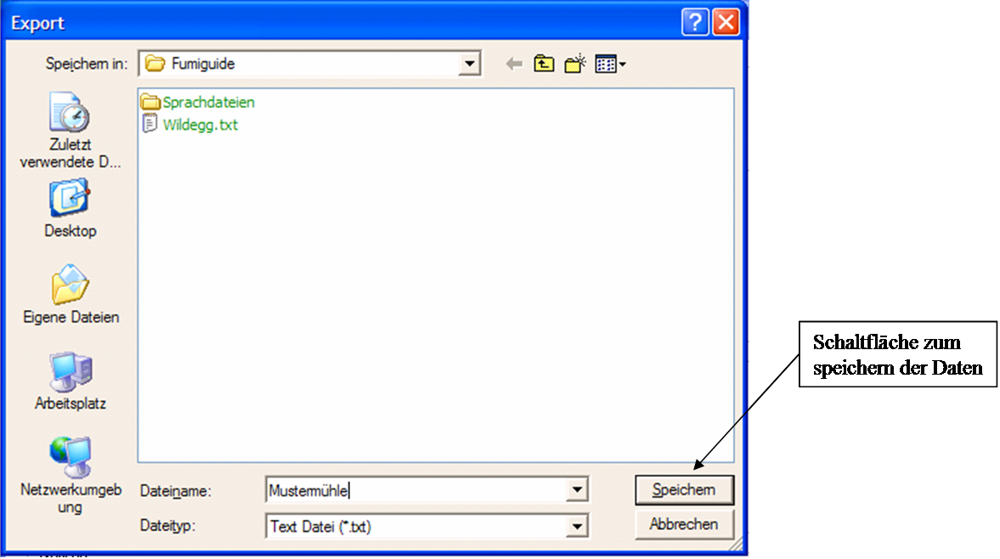
Wenn Sie diese Schritte ordnungsgemäß durchgeführt haben, wird folgende Meldung angezeigt:
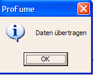
Als nächstes klicken Sie auf die
Schaltfläche Start, anschließend auf Programme, dann auf DAS, und öffnen Sie die
Datei "Fumiguide Report.dot."
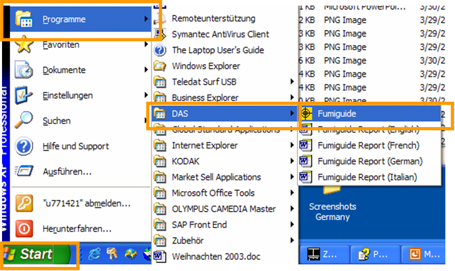
Daraufhin erscheint das folgende
Warnmeldungs-Dialogfenster. Klicken Sie auf die Schaltfläche „Makros aktivieren".
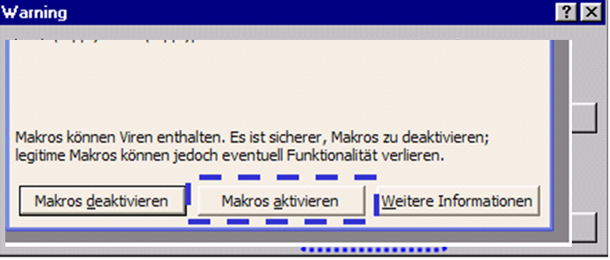
Nach Anklicken von "Makros aktivieren" wird ein weiteres offenes Fenster wie unten
dargestellt angezeigt. Dieses Offene Fenster
sollte den Blick in den Ordner freigeben, in dem Sie die exportierte *.txt file
zuvor gespeichert haben. Doppelklicken Sie hier auf die zuvor von Ihnen erzeugte
Datei “Mustermühle.txt“.
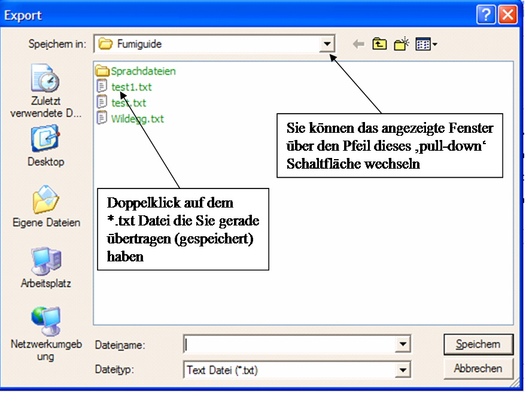
Sie sehen jetzt eine weitere Meldung wie unten dargestellt.
Wählen Sie die Einheiten, in denen Ihr Bericht erstellt werden soll: Englische
oder Metrische Einheiten.
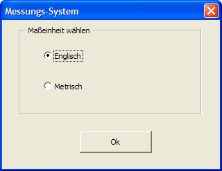
Wenn Sie anschließend auf OK klicken, werden Sie sehen, wie
Informationen aus der *.txt-Datei mit der „Fumiguide Report.dot“-Vorlage
zusammengeführt werden. Diese Zusammenführung kann einige Sekunden dauern. Sie
werden beobachten können, wie die Informationen automatisch eingefügt werden –
das ist ganz normal.
Als nächstes sollten Sie die folgende Meldung sehen. Der fertige Bericht enthält alle Informationen (Daten, Uhrzeiten, Begasungsmittelkonzentrationen, Dosierungsberechnungen usw.), die entweder eingegeben oder berechnet wurden.
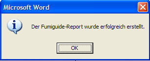
Nach der Überprüfung bzw. Bearbeitung dieses Berichts
können Sie die Datei speichern, indem Sie in der oberen Menüleiste auf „Datei“
und anschließend auf „Speichern unter“ klicken.
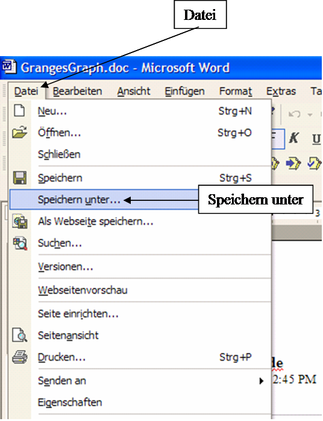
Wenn das Fenster „Speichern unter“ geöffnet wird, geben Sie den gewünschten Dateinamen in das dafür vorgesehene Feld ein.

Falls die *.txt Datei sich nicht
als MS-Word Dokument öffnet könnten die Sicherheitseinstellungen zu hoch sein.
Zum ändern der Sicherheitseinstellungen in MS-Word auf Extras,
Makro und dann Sicherheit klicken.
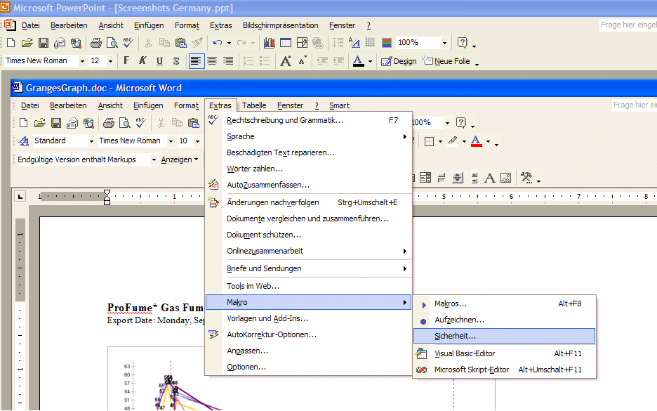
Hier Mittel anwählen was die Aktivierung und
Inaktivierung der Makros wie oben beschrieben ermöglicht.
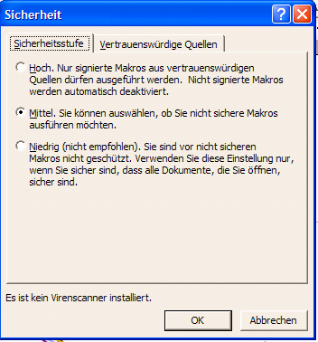